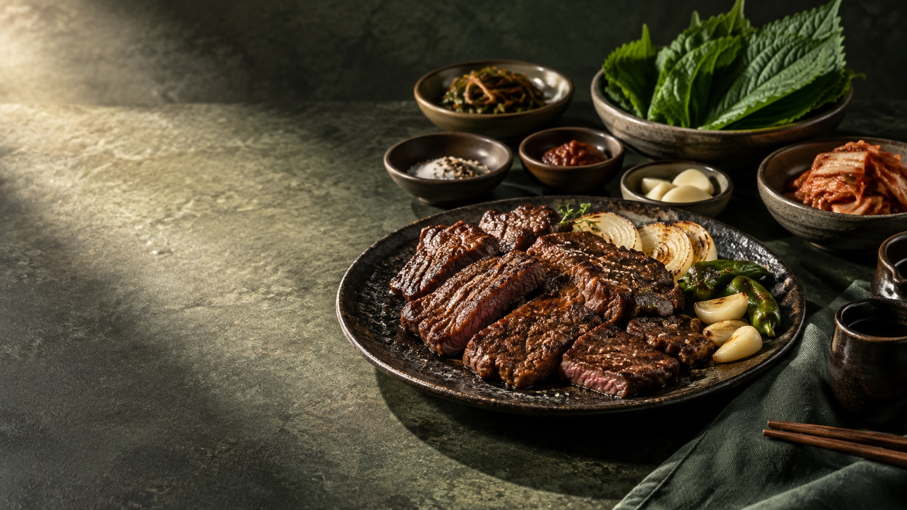

A TABLE WORTH REMEMBERING
숯의 향, 제철의 맛, 다정한 한 상.오래 머물고 싶은 식탁을 차립니다.
SIGNATURE SELECTION
계절이 내어주는 재료를 고르고, 본연의 맛을 지켜냅니다. 소중한 사람과 나누는 식사의 즐거움.
겉은 노릇하게, 속은 촉촉하게. 숯불에서 완성하는 고기의 풍미.
제철 채소와 정갈한 반찬으로 한 상의 균형을 맞춥니다.
따뜻한 밥과 국, 담백한 마무리. 마지막 숟가락까지 편안한 식사.
YOUR BRAND, IN THIS STYLE
F03 · 담화 — 프리미엄 음식점 스타일브랜드명·사진·문구는 고객님의 매장에 맞게 제작합니다.